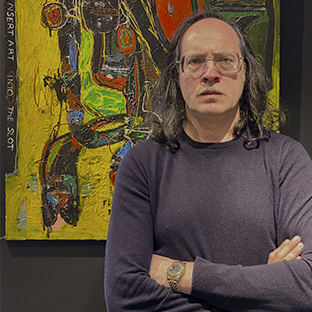

Москва
Maxim Bashev
Максим Башев — художник, график, фотограф, автор коротких рассказов. Удостоен звания «Художник-гуманист» (сертификат вице-президента Fine Arts Sotheby’s Гарри Ф. Метцнера и галереи Aldo Castillo, Чикаго). Современный авангардист, работает в смешанной технике; одна из главных черт его манеры — интеграция фотопортретов в живопись. Своим учителем считает художника и философа Луиса Ортегу. Среди влияний: Веласкес, Эль Греко, Гойя, Дали, Баския, Харинг, Дюбюффе, Раушенберг, Твомбли. Живёт и работает в Москве; работы — в музеях и частных коллекциях России, США и Европы.
Интересует работа?
Доступ в галерею — по предварительной записи.
Записаться на просмотр